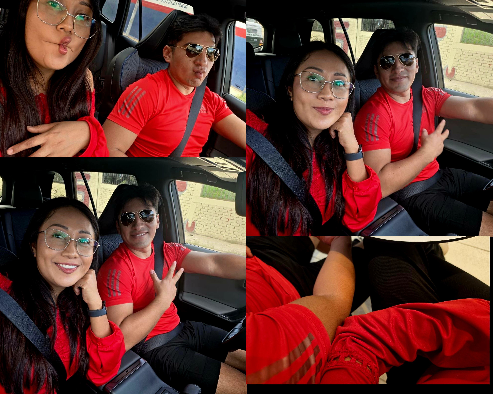
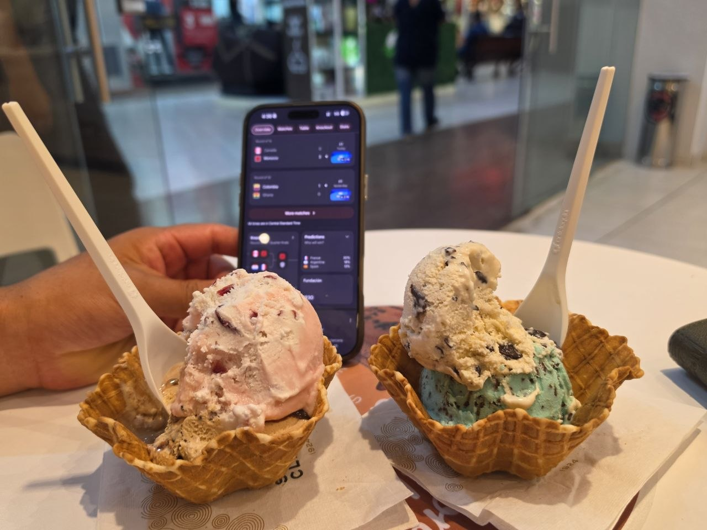

commit 0026 Date: 04 Jul 2026 🟡 Uniformados sin querer 🟢 Git Message feat: matching outfits detected ⚪ Story 4 de julio. Ese día habíamos quedado de vernos para ir a buscar una playera de México. Pasé por tu casa y nos subimos a tu camioneta. Y ahí nos dimos cuenta de algo: sin ponernos de acuerdo... íbamos prácticamente uniformados. Tú con playera roja y short negro. Yo con blusa roja y pantalón negro. No lo planeamos. Simplemente pasó. Nos fuimos a Plaza Bella, comimos algo y después llegó la parte importante de cualquier salida: el postre. Un helado de Santa Clara. Muy rico. 🍦 Después nos pusimos a buscar las playeras de México. Pero había un pequeño problema: estaban agotadas. No encontramos las originales por ningún lado. Así que pensamos que quizá tendríamos que ir al centro a buscar alguna imitación. Pero el tiempo se nos vino encima porque yo tenía que trabajar, así que terminamos regresando. Yo iba manejando y te pedí que fueras atento por si veías algún lugar donde vendieran playeras de la Selección. Y finalmente encontramos unas. Tú elegiste la verde porque era la única talla que había disponible para ti. Yo elegí la blanca porque era la única que había disponible para mí. Al final, esas fueron nuestras playeras. La idea era usarlas al día siguiente. Después de ver el ambiente que se había armado en el centro cuando México ganó el partido anterior, queríamos vivirlo también. Queríamos ir al centro con nuestras playeras y ver todo ese relajo que se armaba cuando ganaba México. Pero esa sería otra historia. Ese día todavía hubo tiempo para las fotografías. Y para que tú dijeras que te parecías a Gilberto Mora. Según tú. 😂 Yo, obviamente, me reí. Y desde entonces quedó el famoso: "Morita". Después de comprar las playeras regresamos a casa. Yo me fui porque tenía que trabajar. Y así terminó nuestro día. No conseguimos las playeras que originalmente buscábamos. Pero terminamos encontrando otras. Y, sin planearlo, también descubrimos que hasta para vestirnos podíamos terminar combinando. 🟣 Developer Notes Matching outfits detected. Playeras originales: unavailable. Plan B: activated. Green jersey: acquired. White jersey: acquired. "Morita" nickname unlocked. Next match preparation: READY. 🟢 Impact on Project + Matching outfit archived. + Mexico jerseys acquired. + Next match preparation completed. + "Morita" successfully added to project lore. 🟢 Commit Status ✔ Completed ✔ Reviewed ✔ Ready for Release
🖼 Recuerdos

Uniformados.

Con Morita.

Helado time. 🍦
1 / 3
⬅ Regresar al Commit History